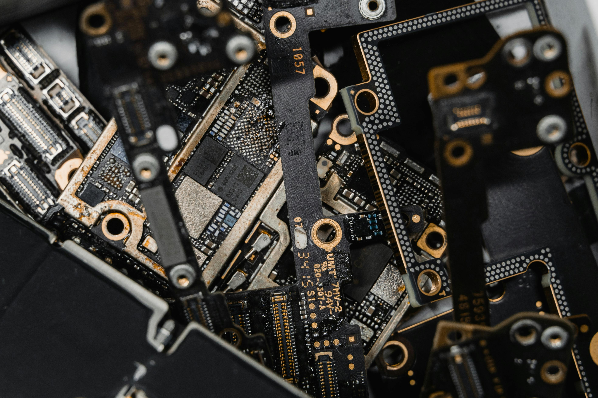
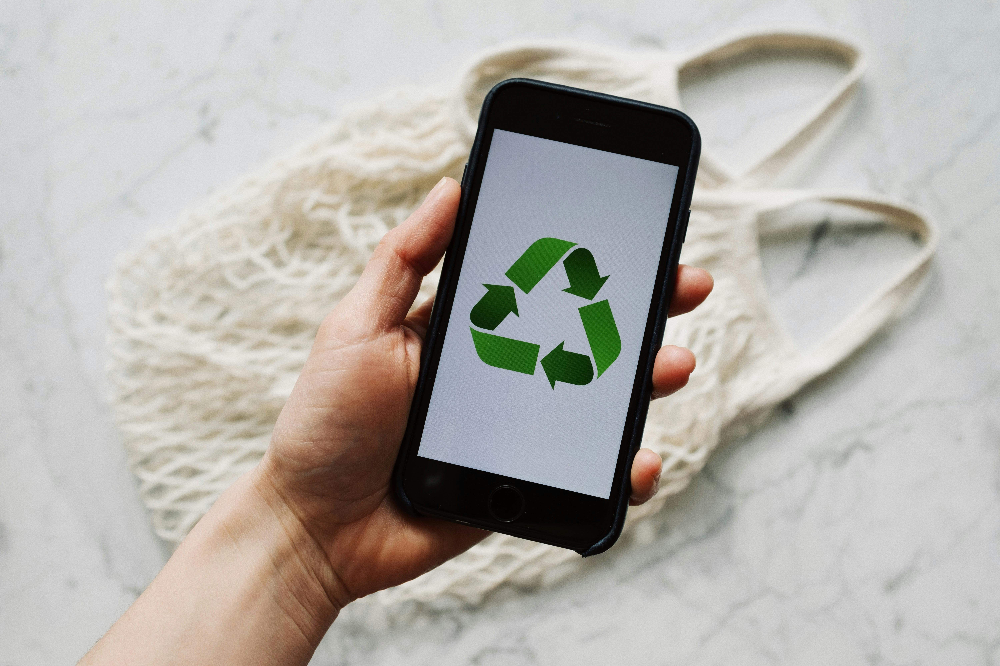

O lixo eletrônico contém metais pesados e componentes tóxicos que podem
contaminar o solo e a água. O descarte correto protege o meio ambiente e
a saúde da população.
Pontos de Coleta em João Pessoa
Sede da Emlur – Av. Minas Gerais, nº 177, Bairro dos Estados
Escola de Línguas CNA – Av. Senador Rui Carneiro, nº 416, Miramar
Centro Cultural de Mangabeira – Rua Josefa Taveira
Núcleo da Emlur (Centro Dia) – Av. Gouvêia da Nóbrega, Roger
Núcleo da Emlur em Tambaú – Rua Aluísio França, nº 49
Núcleo da Emlur em Mangabeira – Praça do Coqueiral
Núcleo da Emlur em Jaguaribe – Rua Floriano Peixoto S/N


Dicas de Descarte
Separe pilhas, baterias e lâmpadas dos demais eletrônicos.